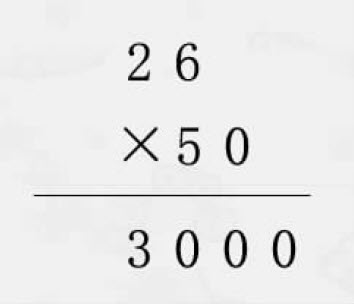
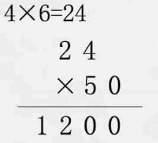
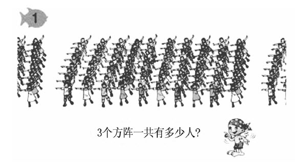
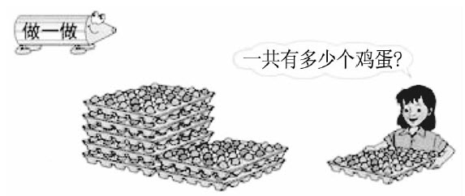

华应龙
“上善若水”是老子的名言。
40多年的所见所闻、所做所悟，让我体味到：师者若水。
师者若水，宽容博爱。老子曰：“水善利万物而不争。”水不在深，有龙则灵；师不在名，有爱则灵。师者应有博爱的胸怀，容纳一切学生，容纳学生的一切。
师者若水，和顺温柔。泰戈尔说：“不是槌的打击，乃是水的载歌载舞，使鹅卵石臻于完美。”抽刀断水水更流，师者至柔为上，温温恭人。
师者若水，水滴石穿。李白吟：“君不见黄河之水天上来，奔流到海不复回。”学生反复100次，教师做101次转化工作，乃把懵懂无知的孩子培育成才。
师者若水，随物赋形。苏辙诵：“圆必旋，方必折，塞必止，决必流。”水无定形，教无定法，因材施教，因地制宜。
师者若水，善待时机。老子道：“动善时。”水遇热成气，遇冷结冰，遇风起浪，遇水相融。课堂教学亦当因时而变，水到渠成，行到水穷处，坐看云起时。
师者若水，灵活自在。孔子说：“知者乐水，仁者乐山。”水有时细腻，有时粗犷，有时妩媚，有时奔放。师者知性，灵动清明，惹人喜爱。
师者若水，公正无私。子曰：“至量必平，似正。”器歪水不歪，物斜水不斜。水不汲汲于富贵，不戚戚于贫贱。师者不跪着教书，心中一泓清泉。
师者若水，心如止水。庄子说：“人莫鉴于流水，而鉴于止水。”静水流深，波澜不兴，师者淡泊名利，志存高远。
师者若水，载舟覆舟。庄子说：“水之积也不厚，则其负大舟也无力。”海纳百川，有容乃大，师者自强不息，厚德载物。
我以为，水最值得我们教师学习的，是“往低处流”。
当我们“往低处流”时，才会真心倾听学生的发言，学生被尊重的需要才能得到满足；当我们“往低处流”时，才会好奇地想看看学生那边会有什么风景，而不再做摸象的盲人；当我们“往低处流”时，才会惊讶于学生的发现，明白“我的认识是对的，与我不一样的不一定就错”；当我们“往低处流”时，才会真诚地欣赏和夸奖学生，好学生是被夸出来的，这不是个传说；当我们“往低处流”时，才会从善如流，从容地与学生一起行走。
而如今在课堂上，我们教师往往自以为是，往往认为老子“教室”第一，往往不肯放低姿态，往往不愿意蹲下来听听孩子们的心声，往往不愿意倒空自己杯子里的水。
哲人语：“宇宙有多高？只有五尺高。”六尺之躯的我们要在五尺高的宇宙里生存就必须低头。
只有师者低首往低处流，学子才会抬头往高处走，这才是新课程呼唤的充满生命活力的课堂的迷人景象。
俗话说：“人往高处走，水往低处流。”其实，要往低处流，先得往高处走。
师者若水。课前，师者要往高处走，提升、丰厚自我；课上，师者要往低处流，接纳、欣赏学生；课后，师者依旧要往高处走，反思、深化经验。这样，我们的人生修为才能渐臻至善——“水唯能下方成海，山不矜高自及天”。
“君子见大水必观焉。”
师者若水。
上善若水。
“解决（连乘）问题”一课讲完了，在热烈的掌声中，听课老师们纷纷向我投来钦佩的目光。
我接受着。
一位老师走到讲台前，眼睛有些湿润，脸庞微红，声音有点颤抖：“华老师，您好！我十分佩服您，特别是学生出错以后您的处理方式。太感谢您了！”听得出，她是一位不善言辞的老师，感受得到，她是一位真诚的朋友。
我猜想，这位老师可能不知道，我的研究方向就是如何对待学生的差错，如何“融错”，她的直觉太妙了。
我享受着。
这班学生太可爱了，非常地灵巧，虽然基础知识和基本技能掌握得不是十分扎实，一会儿这里错一点，一会儿那里错一些，但是他们一点就通。
泰戈尔说：“当乌云被阳光亲吻时，它们就变成了天空中的花朵。”原初，学生的差错是课堂上空的片片乌云，当我们直面现实，以阳光的心态来观照时，就可以观照出这些差错所蕴涵的发展价值，当我们评价在对错之外时，那些差错就幻化成了课堂上的朵朵奇葩。
我要讲“解决问题”，讲寻找条件，讲解题思路，学生却出现了计算出错的问题，出现了书写格式的问题，出现了小括号作用不明的问题，出现了不知道得数后面写不写单位的问题。那又有什么办法呢？课堂就是这样。就像医生不能要求病人只能生什么病、不能生什么病一样。
继而，我想，教师是否也可以像医生那样专业和大气，当自己实在无能为力、回天乏术的时候，不妨邀请大家会诊，不妨指点病人另就高明。我们是否因为总想包治百病，反而妨碍了专业的发展，阻滞了有效课堂的进程？
从课的结构看，开始的环节组织得不好，引导得不妙，经过班组求和、男女求和、差比求和、年级求和的漫长过程，耗时过多。
预设的时候，我考虑帮助学生回顾一下两步计算问题的解决过程。因此，在学生试探性地回答“一组12人，二组12人，三组14人，四组14人”之后，我问学生，“还可以告诉我什么呢”，应该说，后面的发散环节是我主导的。如果在出现意料之外的小组求和之后，我就引导“假如4组都是12人，求全班人数，该怎么办呢”，那样就能一下实现一步乘法的过渡，同时又巩固了乘法的意义。
不枝不蔓，可能更美。
我反思着。
不过，有时候教学的效果可能就是歪打正着，我们教师也许并不清楚哪一句动情的话语唤醒了学生的天耳，并不知晓哪一抹热情的目光点燃了学生的心灯。
有意栽花花不发，无心插柳柳成荫。那么，我们教师的专业追求又是什么呢？又为什么要追求呢？
孔子说：“从心所欲，不逾矩。”这，应当是我们修炼自身所要追求的境界。佛陀说：“应无所住而生其心。”这，应该是我们修炼的方法。不执著于自己的课前预设，保持一颗开放的心，向学生敞开，向课堂敞开，那么，我们就会走向自由和自在。
课堂智慧
当阳光亲吻乌云
——以解决（连乘）问题为例的融错教育
在汶川大地震两周年前夕，北京市对口支援的什邡市邀请我去讲学，确定的教学内容是人教版小学数学三年级下学期第99页“解决（连乘）问题”，要求讲座的内容是“如何提高‘解决问题’教学的有效性”。
接到任务后，我在思考——
现在的“解决问题”教学与传统的应用题教学有什么不同？我们应该如何扬弃传统的应用题教学经验？
问题情境是一节课的眼睛，设置得好，是可以顾盼生辉的。当然，情境最好是真的、自然的。教材中“3个方阵一共有多少人”的问题情境如何呈现？为什么要解决这样一个问题呢？针对这一情境，学生可能会提出什么问题？有更合适的问题情境吗？
学生列式解答连乘问题有困难吗？如果在正确理解题意的基础上，学生都能解答，那么教学的帮助和提升作用又体现在哪里呢？为什么要上这节课呢？
理想的课堂应当不仅传授知识，还要启迪智慧，更要点化生命。那么，这节课教学的智慧点在哪里？又如何点化生命？
经过一个多星期的思考，我确定了本节课的内容，如下——
教学目标：
（1）经历解决问题的过程，学会用乘法两步计算解决问题。
（2）通过解决具体问题，获得一些用乘法计算解决问题的活动经验，感受数学在日常生活中的作用。
（3）渗透爱的教育，让爱在师生们的心间传递。
教学重点：进一步熟悉解决问题的步骤，学会寻找条件。
教学难点：学会叙述解题思路。
课前了解：在灾后重建中，班上有没有被帮助的典型故事？班上有没有孤儿？有没有单亲家庭的孩子？有没有人收到过千纸鹤？会不会折？有没有为玉树的小朋友做些什么？
在进行一番准备之后，我们12位北京市中小学教师代表一同前往什邡。到达什邡后，我们欣喜地看到一派新气象：宽阔的公路、崭新的民房、绿油油的庄稼、幸福的笑脸……学校的建筑在当地是最气派的。在地震遗址公园，我们被倾斜的楼房、下陷的地基、扭曲的管道、废墟中的书包深深地震撼：在大自然面前，生命是多么脆弱。
带着非常特别的心情，我走上了什邡市朝阳小学的讲台。
师：孩子们，我知道你们是三年级（3）班的同学，我们班一共有多少人？
生：（齐）52人。
师：假如不直接告诉我，该怎么办呢？
（学生不明白老师表达的是什么意思）
师：你可以告诉我什么，让我来算。那能告诉我什么呢？
生：（怯怯地，不敢肯定）一组12人，二组12人，三组14人，四组14人。
师：对！知道一组一组的人数，我就可以算出我们班一共有多少人。怎么列式呢？
生：12＋12＋14＋14=52（人）。
师：还可以告诉我什么呢？
生：我可以告诉您女生的人数和男生的人数。
师：这样也可以，怎么做呢？
生：只要合起来就可以了。
师：也可以只告诉我男生的人数，再告诉我女生比男生多多少人或者少多少人，这样好不好算呢？
生：（齐）可以，好算。
师：谁会算？你能说一说怎么算吗？
生：女生比男生少4人。
师：想算全班有多少人，要先算什么？
生：要先算女生有多少人。
师：对，要先算出女生的人数，再把男生的人数和女生的人数合起来，就是全班人数。现在我知道了，我们全班有52人。我又有一个新的问题了，我们全校大概有多少学生，你们知道吗？
（有的学生睁大眼睛，惊讶地扫视别人；有的孩子疑惑地看着老师）
师：不知道的话，帮老师出个主意。我怎样才能知道全校有多少学生呢？
生：（一口气说出）一年级人数＋二年级人数＋三年级人数＋四年级人数＋五年级人数＋六年级人数。
师：行不行？
生：（齐）行——
（孩子们脸上露出笑容，自觉地鼓起了掌）
师：我很佩服这个小伙子！还可以怎么办？请动脑筋想一想。
（教师板书：全校有？名学生）
生：还可以问。
师：问谁？
生：（羞涩地回答）问校长。
师：直接问校长全校有多少学生，多没意思。我只想知道大约有多少学生，可以怎么问？
（学生面面相觑，不知如何是好。过了一会儿，一个孩子举起了手。）
生：每个班大约有50人，50人乘以班数。
师：真是好样的！所以，我们只要问校长我们全校有多少个班就可以了。（转头问校长）请问校长先生，咱们学校有多少个班？
校长：有26个班。
师：全校有26个班，你能不能算一算全校大约有多少名学生呢？
（待学生们在练习本上计算后，教师从中拿出以下算式放在投影仪上）（有孩子边举手边说：错了）

师：算错了没关系，我们看看哪儿错了。
（学生们边看投影边议论）
师：还是让他自己说说错在哪儿了吧！
生：少算了，应该是1300。
师：（带头鼓掌，由衷地感叹）真好！真好！这个小伙子真不错，开始说3000，大家有不同的声音，他思考之后说“少算了”。反应真快！哪儿少算了，你们发现了吗？
（孤孤单单的一个声音说道：“没有。”其他同学议论：“不是少了，是多了吧？”）
师：（笑着）我明白了，你们都同意多算了，多算有多算的道理，少算有少算的理由。说多算了，是结果多了；说少算了，是过程少了。哈哈哈！我们看看过程哪儿少了。
生：“2”还没有乘呢。
师：（指着投影上的错题）对，5×6=30，2×5=10，再加上——
生：进位的3，就是1300。
师：自己又算对了，多好啊！我们应该给他掌声。他能发现错误，并且能改正错误，这是华老师最欣赏的！（众学生鼓掌）
师：现在我们算出来了，全校大约有1300名学生。（扭头面向校长）我们全校有多少名学生？
校长：1280人。
（学生们惊讶地“啊”了一声，一脸灿烂）
师：大约有1300人，真准！
师：我从刚才这么简短的交流中，发现我们三（3）班的同学都很会动脑筋。假如一个学校每个年级有4个班，每个班有50人，你能算一算全校有多少人吗？
（教师边说边板书：每个年级有4个班，每个班有50人）
（学生计算，教师巡视后，取来一位学生的练习放在投影仪上）

（学生看后，有人说错了，有人说对了）
师：认为错了的同学请举手（大部分同学举起了手），认为对了的同学请举手（有五六个人举手）。哪位同学愿意做小老师，给大家讲一讲，为什么说他这道题错了？
生：那个50是从哪里来的？
生（被投影的练习的主人）：每个班有50人。
生：24从哪里来的？
生：有4个班啊！每个年级有4个班，有6个年级，所以4×6=24。
师：我觉得你问的问题很厉害。我也问问，4×6=24求的是什么？
生：求的是全校一共有多少个班。
师：那24×50求的是什么？
生：求的是全校共有多少人，结果是1200人。
师：刚才说他错了的人呢？他哪儿错了？
生：他写竖式时数位没有对齐，24×50，“0”应该和“4”对齐。
师：我没有想到同学们对自己的要求这么严格，确实这个“0”既可以写在“4”的下面，但也可以把“0”放到后边。两个写法都正确，结果是不是一样的？
生：是。
师：如果把“0”放到后面怎么计算？哪位同学愿意做小老师，给大家讲一讲？
生：如果把“0”放到后面，就先算24×5，然后再把“0”添上去。
师：很正确！把“0”放在“4”的下面也可以，就是计算时麻烦了点儿。
（孩子们纷纷点头，不再认为刚才的计算是错的了）
师：现在我们知道了，全校有1200名学生。做错的同学想一想，刚才自己错在哪儿了。谁能勇敢地说一说？
（没有学生敢举手发言）
师：学习就是这样，正因为自己有不会的，才需要学习；要是都会了，我们也就不需要学习了。
（渐渐地，有几个孩子举起了手）
生：刚才我把我们学校的学前班也算进去了，所以乘的数是7，就是28个班。
师：大家说说，他的算式有没有道理？对，问的是全校，我们学校有学前班，就得算。哈哈哈！他的解答也是有道理的。
生：4×6这一步我没有列出式子，直接用24×50了。
师：（笑着）同学们对自己的要求很严格。一会儿用横式，一会儿用竖式。这个怪我，我没有讲清要求。（指向“直接用24×50”的学生）你能都写成横式吗？你说我写。
生：4×6=24，24×50=1200。
师：要不要写单位名称？（开玩笑地）不写要扣分的哟——
（同学们窃笑，气氛越来越活跃）
师：24后面写什么单位？
（有的学生说“班”，有的学生说“个”）
师：哪个最好？
（学生们还是各说各的）
师：好的。让我说，我认为应该写“班”，因为那样可以突出全校有24个班。1200后写什么？
生：（齐）1200“人”。
师：你们知道如果上海的小朋友做这道题，他们会怎么列式吗？
（学生们安静下来，认真地看着老师板书）
4×50×5
=200×5
=1000（人）
师：这个式子你看得明白吗？你说是对还是错？
（学生们议论纷纷，有的说对，有的说错）
师：为什么你认为是错的？请说明理由。
生：他没有写括号。
师：哪里要写括号？你过来添上。
（孩子快步上前，把4×50括了起来）
师：为什么要加括号？
生：如果不加括号，就会被别人看做50×5。
（学生们开始反驳：“不一定。”）
生（另一名）：如果不写括号，就应该在第一步的后面写等于号算出结果。
师：我很佩服我们三（3）班的同学，大家都很爱动脑筋，也能认真观察，还能大胆地猜想。是猜想就有可能是错误的，我们来看看这道题。我们以前学习过小括号，为什么要有小括号啊？因为加了小括号就要先算小括号里面的。现在这个连乘的式子没有小括号，我们就要从左往右一步一步地去计算，就是先算4×50，所以不用加小括号。好了，孩子们，你们知道为什么上海的同学会写出这样一个式子吗？
生：（理直气壮地）我觉得这个式子是错的。因为有6个年级，不是5个。
师：你的判断完全正确。
（孩子们自己鼓起掌来）
师：不过，他们这么做，还是有道理的。因为上海有很多小学就是5个年级（学生惊讶）。看来，与我们不同的回答，不一定就是错的。（学生们似有所悟）不管乘以5还是乘以6，我们都要先想一想：有几个年级呢？要想知道全校有多少人，（指着板书）我们该怎么想呢？（学生们没有反应）
师：先去想——每个年级有多少人？（板书：每个年级有？人）再去想——有几个年级？（板书：有？个年级）
师：要求出每个年级有多少人，该怎么计算呢？
生：用全校的人数除以几个年级。
师：真好，可现在我们就是要算全校人数呀，它是不知道的。
生：4×50，4是每个年级有4个班，50是每个班有50人。
师：所以，要求出年级人数，就要知道每个班有多少人，（板书：每个班有？人）这个年级有几个班。（板书：有？个班）
要求出全校有多少人，我们应该怎么想呢？谁能看着板书说一说？
（学生们坐在座位上自己试着说）
生：（在老师的帮助下）要求出全校有多少人，就要用每个年级的人数乘以年级；要求出每个年级的人数，就要用每个班的人数乘以多少个班。
师：我发现同学们都会做，但不怎么会说，所以我们要把这个思路再说一下。
（教师指着板书示范，同学们跟着说）
师：我们还可以从下往上想，根据每个班有多少人和有几个班，我们可以算出每个年级有多少人；再根据每个年级有多少人和有几个年级，我们就可以求出全校有多少人。（让同桌两人互说解题思路）
师：（投影教材例1，如下图）你看到了什么？生：我看到有同学在做早操。

师：你还看到了什么？
生：每行有10个人，共有8行。
师：你还想知道什么？
生：有几个方阵？
（教师把图片投影中的遮挡物挪开）
生：（齐）3个方阵。
师：如果让你算3个方阵一共有多少人，你会算吗？
生：（跃跃欲试）会。
师：既然你们都会，我就不教了，你们自己算。
（教师组间巡视）
师：（展示一学生作业）华老师看了一遍，确实非常佩服你们，同学们基本上都是这么做的：80×3=240（人），但你们是怎么想的呢？列式解答，大家没问题；说思路呢，有些难。谁能勇敢地说一说解题的思路？
生：有8行，每行10人。8×10=80（人），就求出了1个方阵有多少人。共有3个方阵，就用80×3=240（人）。3个方阵一共有240人。
师：说得特别清楚流利，给她掌声！
（掌声中，该女生得意地坐下，迎来羡慕的目光）
师：现在你会说了吗？
生：（孩子们都点点头）会——
（有不少同学举手，想试着再说一说）
生：每排有10人，有8排，每个方阵80人，3个方阵就是3×80=240（人）。
师：我们可不可以换一种说法？要想求出3个方阵一共有多少人，我们就要先算出什么？
生：1个方阵有多少人。
师：对，要求出1个方阵有多少人，那该怎么算呢？
生：（学生都把小手举得高高的，喊道——）8×10=80人。
师：看每行有多少人，有几行，这就需要我们自己去找。还有算式与这个不一样的吗？
生：我的做法是3×8=24（人），24×10=240（人）。
师：想想他是怎么想的。谁能做小老师给大家讲明白？
生：先求3个方阵的横排，再乘以有多少个这样的横排。
师：我发现你真是他的知音，你完全明白，但你说的有些问题。孩子们，我们一起来看，3×8算的是什么？你们自己说一说。
生：有3个方阵，每个方阵有8排，3×8=24。
师：24表示的是什么？
生：有24排。
师：对，应该是“24排”，而不是“24人”。
生：一排有10人，所以再乘以10。
师：他思考的路子和我们的不一样，但也是对的。
四、创设情境，传播美好大爱种子
师：（神秘地取出红、黄、绿、蓝、粉色的一叠彩纸）这是老师从北京带来的。
众生：（惊呼）太漂亮了！
师：（拿起一张）一张纸把它对折，再对折，我们把它平均分成了几块？
生：4块。
师：每张小纸可以折成一个像这样的纸鹤。（展示自己折的纸鹤）
众生：（由衷感叹）太棒了！
师：我想问问，这么多的纸可以折多少只纸鹤，你怎么算出来？
生：每张纸可以折4只纸鹤，有多少张纸就乘以多少。
师：真好！那么这些纸一共有多少张呢？我告诉你，有5种颜色的纸，每种颜色的纸是一样多的，你想问我什么？
生：每个颜色的纸有多少张？
师：每种颜色的纸有50张。你还想问什么吗？（无人问）你能算出一共可以折多少只纸鹤吗？
生：50×5算的是一共有多少张纸，再乘以4，结果就是可以折出多少只纸鹤。
生：1000只。
师：大家都会做了，下课后把这些彩纸拿回去自己折。想一想，折出来的千纸鹤准备送给谁？
众生：（纷纷地）老师、华老师、现场的老师、爸爸、妈妈、小伙伴……
师：真好，因为送出一只纸鹤就是送出一份心愿、一份祝福。有没有谁想到送给不是自己身边的人？
生：我想送给玉树的小朋友。
师：为什么？
生：因为他们那里受灾了。
师：她要把千纸鹤送给玉树的小朋友，我十分佩服她！这让我想起上周在报纸上看到的一篇文章——
美国东部一个风雪交加的夜晚，推销员克雷斯的汽车坏在了冰天雪地的山区。野地四处无人，克雷斯焦急万分。因为如果不能离开这里，他就会被活活冻死。这时，一个骑马的中年男子路过，他二话没说，就用马将克雷斯拉出了雪地，拉到一个小镇上。当克雷斯拿出钱感谢这个陌生人时，中年男子说：“我不求回报，但我要你给我一个承诺。当别人有困难时，你也要尽力去帮助他！”在后来的日子里，克雷斯帮助了许许多多的人，并且将那位中年男子对他的要求同样告诉了他所帮助的每一个人。
多年后，克雷斯被一场洪水围困在一个小岛上，一位少年帮助了他。当他要感谢少年时，少年竟然说出了那句克雷斯永远也忘不了的话：“我不求回报，但我要你给我一个承诺……”克雷斯的心里顿时涌起了一股暖流。
（聚精会神听故事的孩子们脸上露出了会心的笑容）
师：是啊，爱心是无价的，是不求回报的，它还可以在心和心之间传递，这就像是一个连乘的式子。
（教师板书：一个人的爱心×你×我×他×……=美好的人间）
师：只要人人都献出一点爱，世界将变成美好的人间。这次来到汶川，让我感受到另一个连乘的式子。
（教师板书：一个人的爱心×13亿×365=爱的海洋）
（师生一起轻声朗读这个式子）
师：爱的海洋可以解决任何问题。（板书课题：解决问题）
五、回马一枪，点破问题解决关键
师：（看表）孩子们，我们已经上了42分钟的课了，该下课啦！
生：（全都不停地摇头）不好，不好，NO——
师：按照老师的设计，是没有讲完，但时间已经到了。大家的表现都非常好，今天就上到这里。
生：（依依不舍地）不好，不好。
师：（迫不得已）那我们就再上一会儿？
生：（齐刷刷地喊）好——
师：看看谁最会动脑筋。打开数学书，最下面的一道题，看你能想到多少算式，咱们进行比赛，看看谁的方法多。（学生们写后，进行小组讨论，老师巡视）

师：我看到好多同学的脸上都洋溢着笑容，也看到有的学生忙着动笔写。这说明了什么？
生：有的对，有的错。
师：哈哈哈！其实，不管是对了还是错了，你都会有收获。做对了的同学，可以说说你的经验；做错了的同学，可以分析分析是怎么错的。
生：我数错了，我数成29个鸡蛋了。
师：你真细致！他想一层一层地数出来，这个教训挺好的。不应该一个一个地数，而应该数有几行，再数一行有几个。这样“算”出一层，而不是“数”出一层。解决问题，需要智慧地选用策略，找准条件。谢谢他提醒了我们。为他鼓掌！
生：我算错了，算成了30×80=2300（个）。（全班哄堂大笑）
师：（也笑）孩子们，基本计算能力是解决问题的一个保证。大人们一般喜欢说“不管三七二十一”，（面向大家，指着该生）你可要记住“不管三八二十四”哦！（全班都笑了）现在我们可以下课了，孩子们！
众生：（仍不依不饶）不可以。
师：一堂课解决不了所有的问题。你们的心情我理解，我也觉得跟同学们一起学习很享受。但是老师们后面还有其他活动，我们不能为了满足自己的愿望，而妨碍了老师们的活动。大家说呢？
众生：（点点头，又很不情愿地）嗯——
（本课整理者：王红）